After a teenager was killed in the Bronx while shooting neighbors with a toy 'water bead' gun, the NYPD joined departments across the country by announcing the toys are banned under existing airsoft gun laws.
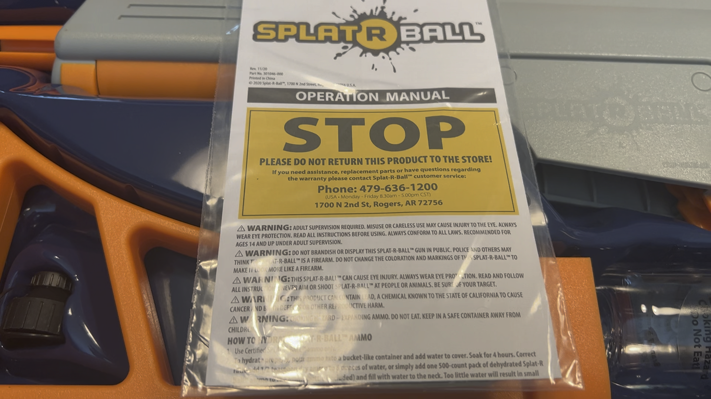
On the first page of the SPLATRBALL's operation manual, one warning warns users not to "brandish or display" the gun in public since police might mistake it for a firearm.
This summer, a new toy craze has met with tragedy and legal challenges across the city and the country.
In Concourse, a man allegedly harassed a Bronx cop in late July by pointing an ‘Orbeez’ gun, loaded with water-filled gel balls, at an officer and shouting at him. He was arrested for attempted assault on July 23rd, just one day after the tragic killing of a teenager in Mount Hope, 18-year-old Raymound Chaluisant.
Chaluisant was fatally shot by an off-duty corrections officer when the officer ‘returned fire’ with a real gun after Chaluisant hit him with a water bead in the back. New York police immediately began to post about the kind of toy weapon that had been found near Chaluisant’s body, calling them out as unsafe and threatening confiscation and summons’ for anyone who used one.
One gel blaster brand has garnered some unsolicited attention: the SPLATRBALL blaster was used as an example of illegal gel blasters in NYPD posts about them following Chaluisant’s death. The police have emphasized the danger of the toy weapons, but what are they really?
So what is a water bead gun or gel blaster?
Take a look... of one brand of gel blaster: the SPLATRBALL
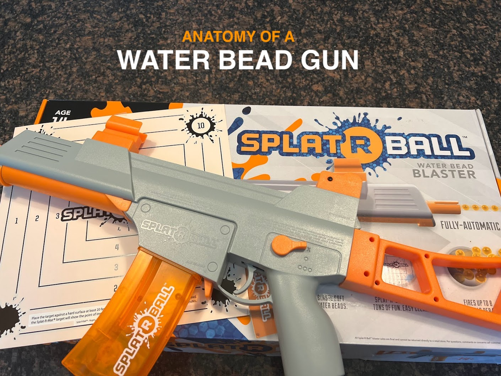
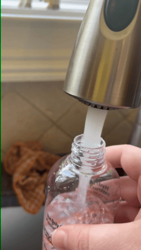
Magazine
Unlike the spring-powered mechanical magazines used in other imitation guns, toy gel bead blasters like the SPLATRBALL have a small electronic magazine that feeds the beads up into the gun's mechanisms to fire.
The 'orbeez' style 'ammo' for the SPLATRBALL starts out tiny and expands over 4 hours in water. When fired, the water beads explode on impact, causing minimal damage.
Battery
The SPLATRBALL has a small removable 7.4 volt 1800mah battery that connects under the muzzle and can be recharged via USB.
The battery is lower voltage than the typical "stick" batteries used in airsoft guns.
Gearbox mechanism
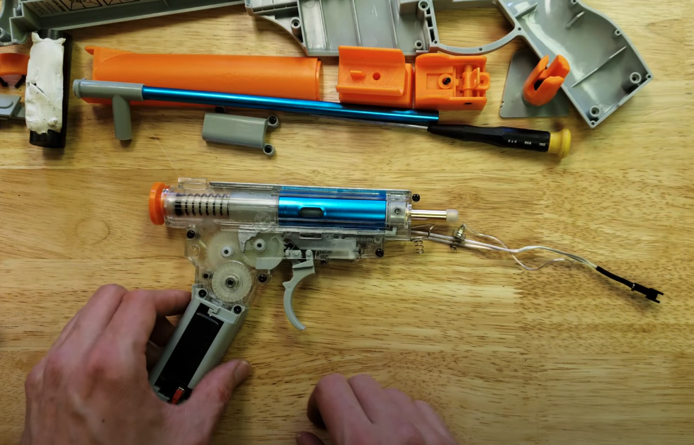
The SPLATRBALL has a spring piston gearbox mechanism similar to the gearboxes used in airsoft guns, but with larger clearances for the 'Orbeez' style water bead ammo and plastic nylon gears and components.
SPLATRBALL advertises a muzzle velocity of 200 feet per second. A knob selector allows you to switch between auto and semi-auto firing.
ABOVE: V2 Gearbox mechanism visualization
Click on areas in the image above that you want to see closer or learn more about.
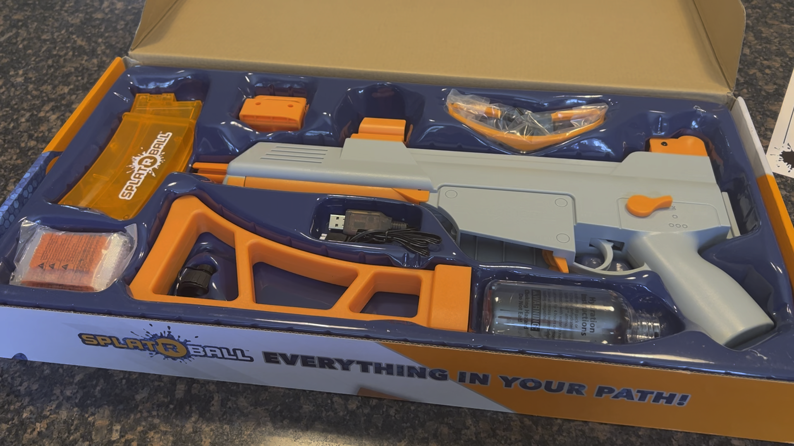
Safety Glasses
The SPLATRBALL comes with a pair of small plastic safety glasses.
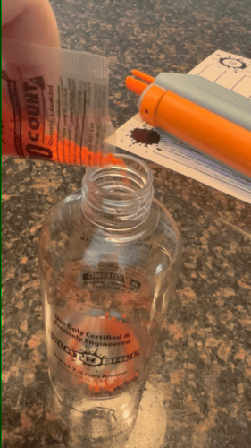
Dehydrated 'Ammo'
The blaster comes with ten "ammo" packs of 500 dehydrated water beads. The magazine holds up to 400 at a time, and the gun fires up to 8 'splatrballs' per second on full auto.
The beads grow in size by over 10x turning into squishy gel balls.
Bright colors and imitation guns
The SPLATRBALL and similar water bead blasters are brightly colored, complying with laws across the country for imitation and toy guns that requires toy guns look different from real firearms -- but some children and hobbyists have started modifying their toys to look like the guns they're visually based off of.
SPLATRBALL explicitly warns users not to modify their guns to look more realistic, but examples of guns painted black or modified with accessories have been shared across social media.
Stock and scope
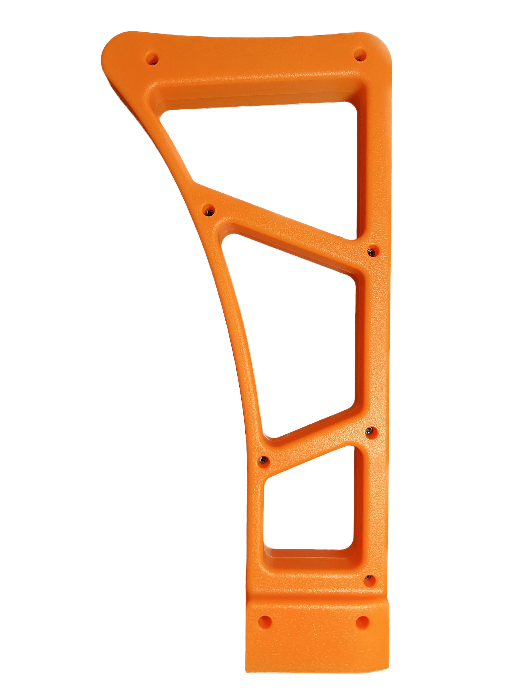
The blaster comes with colorful accessories in the style of airsoft and paintball guns, including a removable stock and a faux-scope.
Click on areas in the image above that you want to see closer or learn more about.
In New York City, the ban on toy guns like these comes from § 10-131(b) in the New York City Administrative Code’s regulations on firearms. Air pistols, air rifles or any similar device “in which the propelling force is a spring or air” are illegal to sell or possess in the city without a license from the commissioner of the New York Police Department.
City code allows for the possibility of a licensing process — and sets an annual fee for licensing — but there’s no public ap plication or formal licensing process in the city for this kind of toy gun.
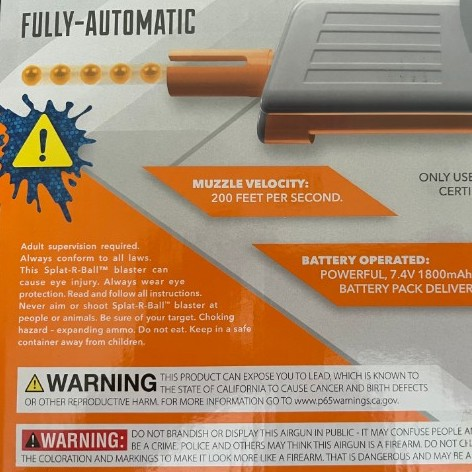
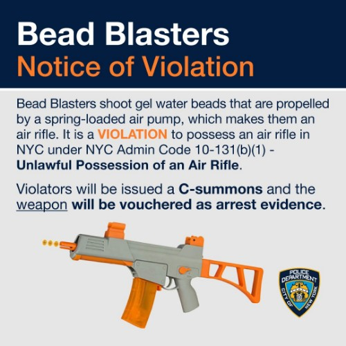
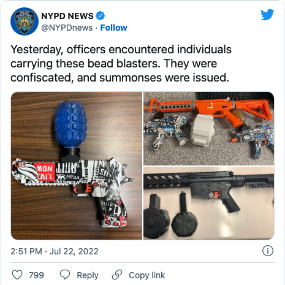
From left: the operation manual for the SPLATRBALL water bead blaster, the warnings on the back of the blaster box, an NYPD distributed notice about NYC law banning air pistols including gel blasters, and an NYPD News post announcing the confiscation of bead blasters from July, 2022, courtesy of NYPD/DCPI.
Automatic electric gun (AEG) style water bead blasters like the SPLATRBALL have lower-caliber versions of the kind of gearboxes used in normal electric airsoft guns, just using nylon gears and modified electric magazine feed and barrel sizing adjustments to accommodate their squishy ammo. Like AEG airsoft guns, they have an internal motor inside a gearbox that loads an air pump piston against a spring. When the spring releases, the piston plunger is pushed forward through a cylinder and the water bead pushed up through the magazine is shot through the barrel.
So, for all that blasters like these are toys with relatively harmless ammo and are unlikely to cause serious injury used as-instructed, they definitely do fall under the administrative code’s definition banning guns where “the propelling force is a spring or air.” So — why do kids in New York City have them, if they’re illegal to buy, sell, or own?
Four of the top ten best sellers on amazon for the category 'toy foam blasters' are water bead guns — the guns make up 17 of amazon's top 50 best sellers in the category.
On Amazon and other online stores, water bead blasters like the SPLATRBALL, Omoqia Toy’s MP-9 Gel Ball Blaster, or the Gel Blaster SURGE are exploding in popularity, and they’re surprisingly easy to get a hold of.
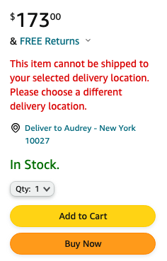
For some reason, despite not firing any kind of foam projectile, most of these water bead blasters are listed — and ranked — in Amazon’s Toy Foam Blasters category under Toys and Games, like a NERF foam dart gun. Gel blasters aren’t foam dart guns, but they’re outranking many of those toys in their own category. Four gel blasters cracked the top ten best selling “toy foam blasters” on Amazon in August. Seventeen total made the site’s top 50, most with hundreds or thousands of reviews.
Amazon knows that air and spring powered guns are banned for sale, shipping, and possession in New York City — or at least, the company is aware of enough city regulations restricting their sale that they will not ship guns in the airsoft category within New York. If you try, they serve you a red-text error message warning you that the item you’ve picked can’t be shipped to your location. But try to order most of the banned gel blasters on the site into the city, categorized as they are in the toys sections, and Amazon promises next-day delivery.
Within Amazon’s seller guidelines on restricted products, the company explicitly notes that airsoft guns, toy guns and guns marketed as air or spring driven are subject to geographic sales restrictions, but many of the gel blasters listed on the site are completely unrestricted, flying under the radar despite their recent popularity.
Promoted significantly within Amazon’s New Releases, Best Sellers, and recommendations features and with no warnings on product pages that these colorful toys qualify as airsoft guns and are illegal in certain jurisdictions, families may buy them as gifts or new toys completely ignorant to where they fall within NYC code – and Amazon fulfills those orders, leaving those families unknowingly violating the law and putting their children at risk.